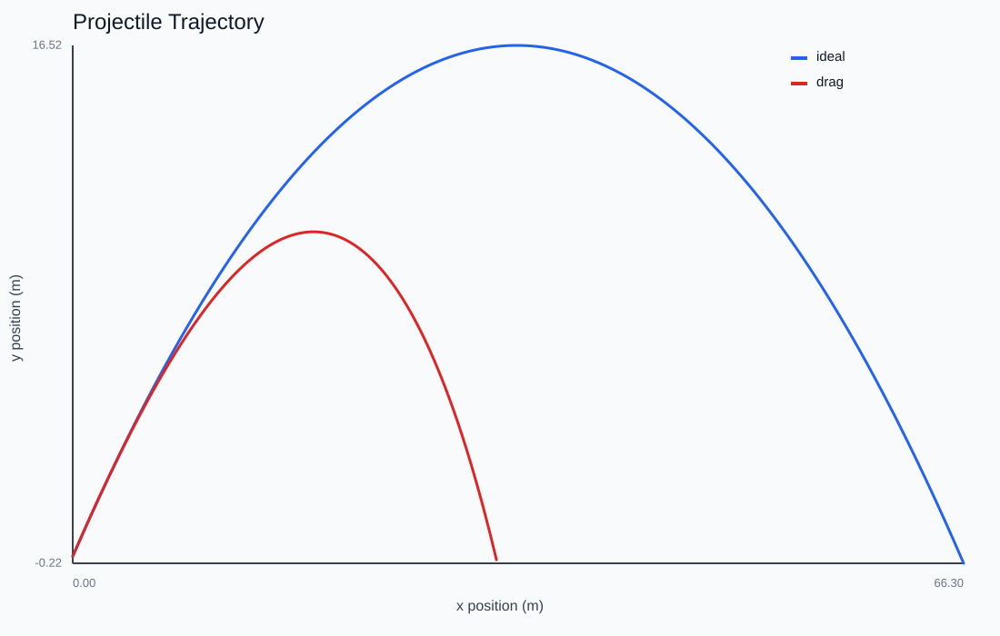
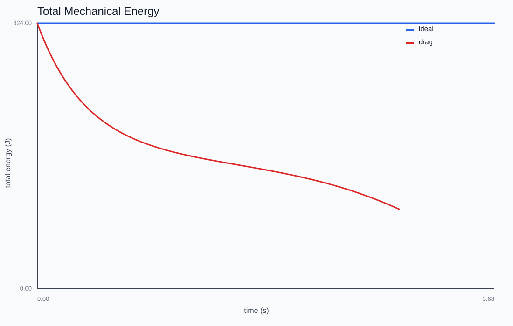

Projectile Motion
How does a body move under constant gravity — and how much does the computer's timestep change the answer?
Adjust launch speed, angle, and drag — the arc is integrated live with RK4 while a marker flies the trajectory.

The model
The state is a position and a velocity; the only acceleration is (0, -g). With no drag the total mechanical energy KE + mgh should be exactly constant, so it becomes the first diagnostic: if the number drifts, the integrator — not the physics — is responsible.

Euler is not free
Run the same launch with explicit Euler, semi-implicit (symplectic) Euler, and RK4 at timesteps of 1/10, 1/30, and 1/120 s. Explicit Euler injects energy and overshoots the analytic arc; semi-implicit Euler stays bounded; RK4 tracks the closed form x(t) = x0 + v0 t + ½ a t² to the width of the line. This is the project's recurring theme in miniature — match the integrator to the structure you care about.
Adding drag
Quadratic drag F = -c |v| v turns the symmetric parabola into a shorter, steeper-falling arc and makes the energy plot tip downward. There is no longer a closed form, so the simulation stops being a check and starts being the only answer.
This chapter is drawn from the physics-lab study notes and renders. The longer write-ups and project essays live on the blog.